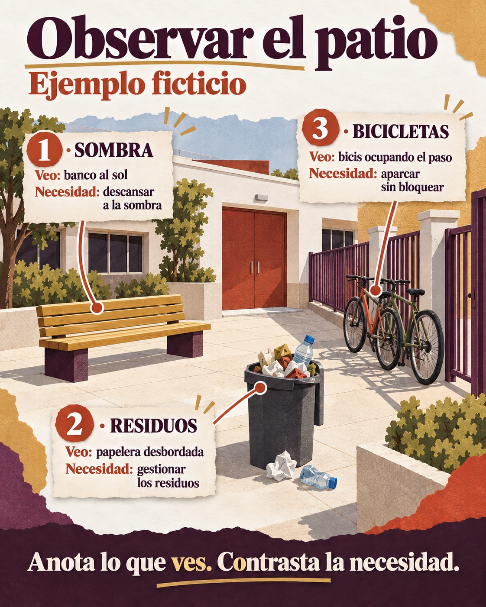

Contenido
Qué vas a aprender
A distinguir una necesidad de un capricho, a observar el entorno con método y a construir un mapa de necesidades del centro y del pueblo del que saldrá vuestro proyecto.
Necesidades, problemas y deseos
Todo proyecto tecnológico empieza por una necesidad, pero no todo lo que «nos gustaría» es una necesidad. Para distinguirlas conviene hacerse tres preguntas:
| Pregunta | Si la respuesta es… |
|---|---|
| ¿A quién afecta y cuántas veces? | A muchas personas o muy a menudo → es una necesidad de peso. |
| ¿Qué pasa si no se resuelve? | Alguien se queda fuera, se hace daño, se pierde tiempo o dinero → hay un problema real. |
| ¿Se puede comprobar? | Se puede medir, contar o fotografiar → no es una opinión. |
Ejemplo
«Queremos una máquina de refrescos» es un deseo: afecta a quien quiera comprar, no pasa nada grave si no existe. «La rampa de acceso está tan inclinada que una silla de ruedas no puede subir sola» es una necesidad: afecta a personas concretas, las deja fuera y se puede medir la pendiente.
El entorno próximo: el centro, Gines y Andalucía
Un estudio de diseño no inventa problemas en un despacho: sale a la calle. Vuestro entorno tiene tres capas y en las tres hay necesidades tecnológicas:
- El instituto: accesos, patio, sombra, pasillos, aseos, aulas-taller, papeleras y contenedores, aparcamiento de bicis, señalización, ruido.
- El pueblo: calles y plazas cercanas, transporte, parques, puntos de reciclaje, comercios, espacios para jóvenes.
- Andalucía: calor extremo, sequía y agua, energía solar, movilidad, envejecimiento de la población, turismo. Un problema del pueblo casi siempre es también un problema andaluz.
En esta unidad el foco está en las dos primeras capas, que son las que podéis observar directamente; la tercera os sirve para entender por qué el problema importa más allá del instituto.
Observar con método
Mirar no es lo mismo que observar. Observar es mirar con una pregunta en la cabeza y apuntando lo que ves. Tres técnicas que usan los estudios de diseño:

Leer el contenido de la infografía
- 1 · SOMBRA — Veo: banco al sol — Necesidad: descansar a la sombra
- 2 · RESIDUOS — Veo: papelera desbordada — Necesidad: gestionar los residuos
- 3 · BICICLETAS — Veo: bicis ocupando el paso — Necesidad: aparcar sin bloquear
- Anota lo que ves. Contrasta la necesidad.
| Técnica | En qué consiste | Qué se anota |
|---|---|---|
| Observación directa | Situarse en un lugar y mirar qué hace la gente durante unos minutos. | Qué ocurre, cuántas veces, qué falla. |
| Entrevista breve | Dos o tres preguntas abiertas a quien usa el espacio. | Sus palabras, no las vuestras. |
| Recorrido con ficha | Seguir una ruta fija y rellenar una ficha en cada parada. | Lugar, problema, personas afectadas, evidencia. |
Las evidencias
Una foto del problema (la papelera desbordada, el escalón sin rampa, la bici atada a la valla) vale más que un párrafo. Nunca fotografíes a personas: fotografía el lugar o el objeto. Si necesitas describir a quién afecta, hazlo con palabras («alumnado que llega en bici»).
El mapa de necesidades
Al volver de la salida, el equipo junta todo lo observado en un mapa de necesidades: una tabla con una fila por problema detectado.
| Lugar | Problema observado | A quién afecta | Evidencia | Primera idea |
|---|---|---|---|---|
| Entrada principal | Bicis atadas a la valla; estorban el paso | Quien llega en bici; quien entra a pie | Foto; contadas 9 bicis | Aparcabicis cubierto |
| Patio, zona de bancos | Sin sombra a mediodía | Todo el alumnado en recreo | Foto; termómetro 34 °C | Pérgola con toldo o vegetación |
| Pasillo de planta baja | Contenedor amarillo lleno de papel | Servicio de limpieza; todo el centro | Foto | Cartel con fotos + tapa de color |
De este mapa saldrá, en la siguiente parte de la unidad, la necesidad que vuestro equipo va a trabajar. No hace falta decidirla todavía: ahora toca recoger cuantas más, mejor.
Ahora inténtalo
Actividad 3 · Salida de observación
- Leed el guion de la salida de observación y repartid las zonas entre las personas del equipo (cada una lleva su ficha impresa o el móvil para anotar).
- Durante la salida: rellenad una ficha por parada, haced fotos de lugares y objetos y, si es posible, una entrevista breve.
- Al volver: volcad todo en el mapa de necesidades del dossier (apartado 1). Mínimo seis necesidades distintas, al menos dos fuera del instituto.
- Entrada de la bitácora: quién observó qué, y foto del tablero Kanban actualizado.
Para imprimir
Guion de la salida de observación (PDF) — ruta, ficha de parada y preguntas de entrevista.
El mapa de necesidades es el apartado 1 del Dossier de propuesta (tarea de Moodle del mismo nombre, se entrega antes de preparar el pitch).
Verdadero o falso
¿Necesidad o deseo? Decide si cada afirmación es verdadera o falsa.
00:00: